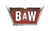

Witcher Contracts Overview
OVERVIEW: MONSTER HUNTER
While the attempts to find your adopted daughter always take precedence, you are a Witcher with a history of tracking and slaughtering the hardiest monsters throughout the Northern Realms. There is no reason why you can’t undertake some additional tracking and slaying missions that benefit the villages of the realm, as well as your coffers.
Witcher Contracts involve either stumbling upon evidence of a monster’s activity (its lair, prints, or evidence of bloodshed and combat), or by reading notices requesting your help, and bartering a good price for your services. Or, you can stumble into the contract-giver without finding a notice of their pleas.
Beware that the monsters you hunt during these contracts are tougher versions of the same enemies you may meet during your travels. However, they are susceptible to the same oils, potions, bombs, and Signs as their lesser brethren. Some of these creatures are exceptionally dangerous, so you may consider checking the level you need to be in the Quest Menu to ensure you’re up to the task! As always, a comprehensive study of this guide’s Bestiary is most helpful when preparing for these quests.
AVAILABLE CONTRACTS
ORIGINAL ADVENTURE (26 CONTRACTS)
There are a total of 26 Witcher Contracts to attempt, including one in White Orchard. There are 11 in Velen, but one of them is only accessible when you’re already attempting Secondary Quest: Master Armorers, and is detailed in that previous section. There are eight in Novigrad (the city and surrounding territories). There are six in Skellige.
AVAILABLE CONTRACTS: DLC (3 CONTRACTS)
DLC: There are a total of three additional Witcher Contracts to complete as part of the downloadable content. One takes place in Velen, and leads to a Secondary Quest. The other two are in Ard Skellig.
{kind=link}
AVAILABLE CONTRACTS: BLOOD AND WINE (8 CONTRACTS)
Blood and Wine: In addition to the contract that is only available during Main Quest: Beyond Hill and Dale[el], there are a total of seven additional Witcher Contracts to complete as part of this expansion, though some don’t require you to slaughter a frightening version of a particular monster. They all take place within the Duchy of Toussaint.
{kind=link}
AVAILABLE VINTNER CONTRACTS: BLOOD AND WINE (5 CONTRACTS)
Blood and Wine: The Duchy of Toussaint has a number of Vintners (Wine merchants) who are having a devil of a time removing particular beasts from their subterranean storage areas. These small-scale Contracts are also available within the Duchy of Toussaint.
WITCHER CONTRACTS
|
Contract Name | |
|---|---|
| Devil by the Well | |
|
Velen – No Man’s Land |
|
| Components for an Armorer | |
 The Beast of Honorton The Beast of Honorton |
|
| Where the Cat and Wolf Play… |
|
| Jenny O’ the Woods | |
| The Merry Widow | |
| Missing Brother | |
| Mysterious Tracks | |
| The Mystery of the Byways Murders | |
| Patrol Gone Missing | |
| Phantom of the Trade Route | |
| Shrieker | |
| Swamp Thing | |
| Woodland Beast | |
| The Apiarian Phantom | |
| The Creature from the Oxenfurt Forest | |
| Deadly Delights | |
| Doors Slamming Shut | |
| An Elusive Thief | |
| Lord of the Wood | |
| The Oxenfurt Drunk | |
| The White Lady | |
| Dragon | |
| Here Comes the Groom | |
| Missing Miners |
|
| Missing Son | |
| Muire D’yaeblen | |
| The Phantom of Eldberg | |
| Skellige’s Most Wanted |
|
| Waylaid Transport | |
|
The Duchy of Toussaint | |
 Mutual of Beauclair’s Wild Kingdom Mutual of Beauclair’s Wild Kingdom |
|
| Big Game Hunter |
|
| Duck, Duck, Goosed! |
|
| Equine Phantoms |
|
| Bovine Blues |
|
| The Tufo Monster |
|
| Feet Cold as Ice |
|
|
Vintner Contracts | |
| Dun Tynne Hillside |
|
| Rivecalme Storehouse |
|
| Chuchote Cave |
|
| Griffin-in-the-Vines |
|
| Cleaning Those Hard-to-Reach Places |
|
* Any quests with this symbol are “unmarked” and don’t appear in your Quest Menu** Total includes Critical Path or Secondary-related quests already previously counted
The Witcher® is a trademark of CD PROJEKT S. A. The Witcher game © CD PROJEKT S. A. All rights reserved. The Witcher game is based on a novel by Andrzej Sapkowski. All other copyrights and trademarks are the property of their respective owners. Learn more at thewitcher.com.